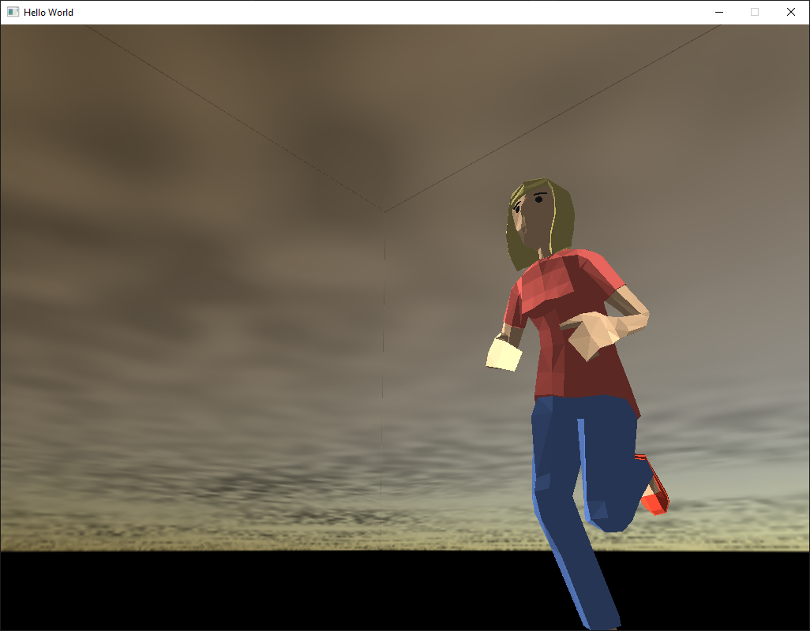
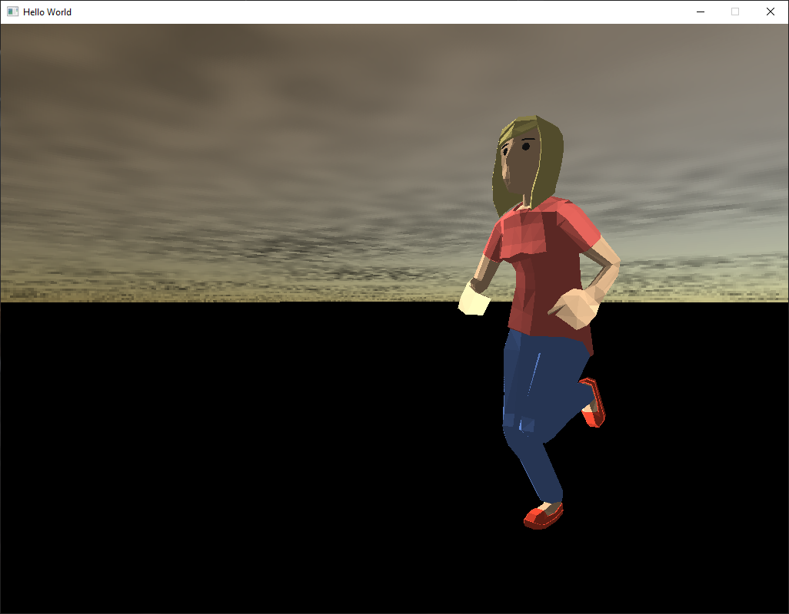

Testing different 3d model formats for the AssimpMesh class. I tried 3DS but it seems this format doesn't store skeletal information, or at least assimp doesn't load it. Also it seems Blender doesn't support 3DS by default. So far, glTF and DAE have been tested working on PC, and glTF on PS3. IQM format loads but doesn't have animations/skeleton.
Starting to add physics, currently reading & following "Game Physics Cookbok" by Gabor Szauer. Today finished adding chapters 4 and 5, which adds some 2D shapes and collision detection: Rectangles, oriented rectangles, circles, lines, and points.
Started chapter 6 of game physics cookbook; Added 2d ContainingRect/Circle and QuadTree.
Finished chapter 6 & 7 of game physics cookbook. Added 3d primitives Point3, Sphere, AABB, OBB, Ray, Plane, Line3.
Started chapter 8 code of game physics. Starts 3d point intersections and point on surface nearest to other points.
Finished game physics chapter 8 and started chapter 9; added Sphere collision detections.
Finished game physics chapter 9; AABB, OBB, Plane collision detections.
Started game physics chapter 10; ray and Sphere, ABB, OBB collisions.
Finished game physics chapter 10; Line and sphere, ABB, OBB collisions.
Started game physics chapter 11; triangle tests
Finished game physics chapter 11 (skipped model struct); started test physics example
Added floor and camera to test physics example; TODO start defining physics objects and testing
Added sphere, plane, and line to physics objects in demo; collision seems working so far. Added DrawLine to PC renderer.
Added AABB, OBB and another sphere to collision tests; added draw aabb/obb to PC renderer. Looks like so far:
Finished physics chapter 12; starting HopsPhysics namespace - named "World" and "Body" instead of "Scene" and "Model".
Started physics chapter 13; Frustum class; Point, AABB, OBB and Frustum collision.
Continue physics chapter 13; Add raycasting and unproject screen to world coordinates. Testing raycasting video:
Continue physics chapter 13. Frustum from view,projection matrices and sphere-frustum collision detection working. Referenced "Fast Extraction of Viewing Frustum Planes from the World-View-Projection Matrix" by Gribb and Hartmann: http://www.cs.otago.ac.nz/postgrads/alexis/planeExtraction.pdf. The book code didn't work with my current code, presumably due to handed-ness and matrix orientation. Testing video below; the floor becomes dark if the sphere is outside of the view frustum, and light if the sphere is inside of the view frustum:
Started physics chapter 14; updated Raycast functions to use RaycastResult struct with normal, time, and location.
Finished physics chapter 14; PhysicsSystem, RigidBody, Particle classes.
Finished chapter 14 demo. Particle simulation seems to be working. TODO - be able to draw AABBs and OBBs as solid instead of see through; it's a little difficult to make out here:
Started physics chapter 15: manifolds and rigid bodies with volume. Added collision manifolds for OBB and sphere and started RigidBodyVolume class.
Continue physics chapter 15. Started collision resolution and rotational impulses.
Have been working through "Game Phyisics Engine Development" by Ian Millington. Have implemented up to the Bridge demo, then paused to re-organize the repository to consolidate same/similar code.
Next, got assimp library compiled for PSP and Wii, and tested a gltf model:
For the PSP I had to disable/comment out the internal assimp logging, and for the Wii I basically had to make the same big endian changes I did for the PS3. The modified assimp repositories are: https://github.com/williamblair/assimp-wii and https://github.com/williamblair/assimp-psp.
Finally, fixed lighting on the Wii to work properly with the textured assimp model. Mainly needed to change the GX_SetTevOp argument to GX_MODULATE for textured vertex buffers.
Started rigid bodies/chapter 11 in Millington physics. Implemented the flight simulator demo, which seems to be basically working (although I think there might be a slight bug). There was a bug in QuatToMat4 (I had to revert from the "game physics in a weekend" book version). Getting the PSP version to work, I had to dynamically allocate the physics objects instead of having them be globally static. Then for the Wii version, I fixed a bug in the Mat3 row-col accessor by switching from [col][row] to [row][col] as the Wii matrices are row-major.
Finished the sailboat demo from chapter 11 in Millington physics.
Started Millington physics chapter 12; Bounding Volume Hierarchy for broad-phase collision.
Put together linear physics demo w/ md2 model and third-person camera. It's crashing on PSP, TODO debug that. Haven't tested on other platforms yet either, but guessing PSP will be the hardest. Mostly uses physics code from Szauer's book.
Fixed PSP crashing issue - the delta time was a garbage value initially on PSP because I forgot to initialize the game timer. The frame rate on the PSP being lower (I think related to the texture mapping on the ground tiles) is causing the physics to be much more unstable, including clipping and falling through the ground in some cases.
I've started looking into using Bullet3 physics instead. I have a test working on PC and PSP. To compile Bullet3 for PSP I had to add some cmake flags to disable some extras, and comment out BulletOpenCL from a CMakeLists.txt. It is located here: https://github.com/williamblair/bullet3-pspsdk.
It seems to run pretty smoothly on the PSP if you're not on the tile floor (again, I think the performance hit is texture related, guessing I need to add mipmapping). TODO add the animated character back in. I'm working on figuring out how to properly move the character using Bullet, right now they are kind of slidy.
I added back in the IqmMesh class and got an initial skybox implementation working. Originally I was seeing edges along the sides of each box, which was fixed by changing the texture min/mag filter to GL_NEAREST instead of GL_LINEAR:
 I also used the method from "Game Coding Complete" to always center the skybox at the camera's position, as opposed to using a separate shader and cubemap feature from OpenGL, because I'm assuming this way (with 6 separate planes and textures) will be more portable to other platforms. I also had an issue that one of the triangles wasn't being rendered, which turned out to be because it was too far away/outside of my projection matrix's view depth. Lessening the size of each plane (from 1000 to 250) fixed this.